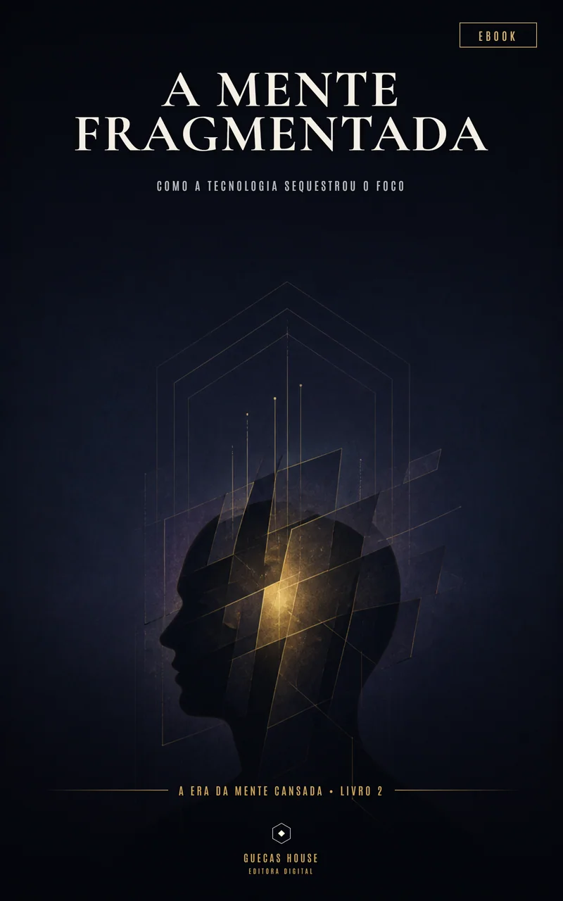

A Era da Mente Cansada • Livro 2
A Mente Fragmentada
Como a tecnologia sequestrou o foco
Uma investigação sobre atenção interrompida, dopamina e sobrecarga digital.
Em desenvolvimento editorial
Sobre este volume
Uma investigação sobre atenção interrompida, dopamina e sobrecarga digital. O projeto está sendo desenvolvido com a linguagem humana, acessível e sem promessas mágicas que orienta a Guecas House.
O que este ebook investiga
- Como interrupções constantes remodelam a atenção.
- A relação entre recompensa rápida, dopamina e hábito digital.
- Práticas realistas para reconstruir foco sem abandonar a tecnologia.
Sinopse, capítulos, extensão, preço e data de lançamento poderão ser atualizados durante a edição.
- Série
- A Era da Mente Cansada
- Volume
- 2 de 20
- Formato previsto
- Ebook digital
- Status
- Em desenvolvimento